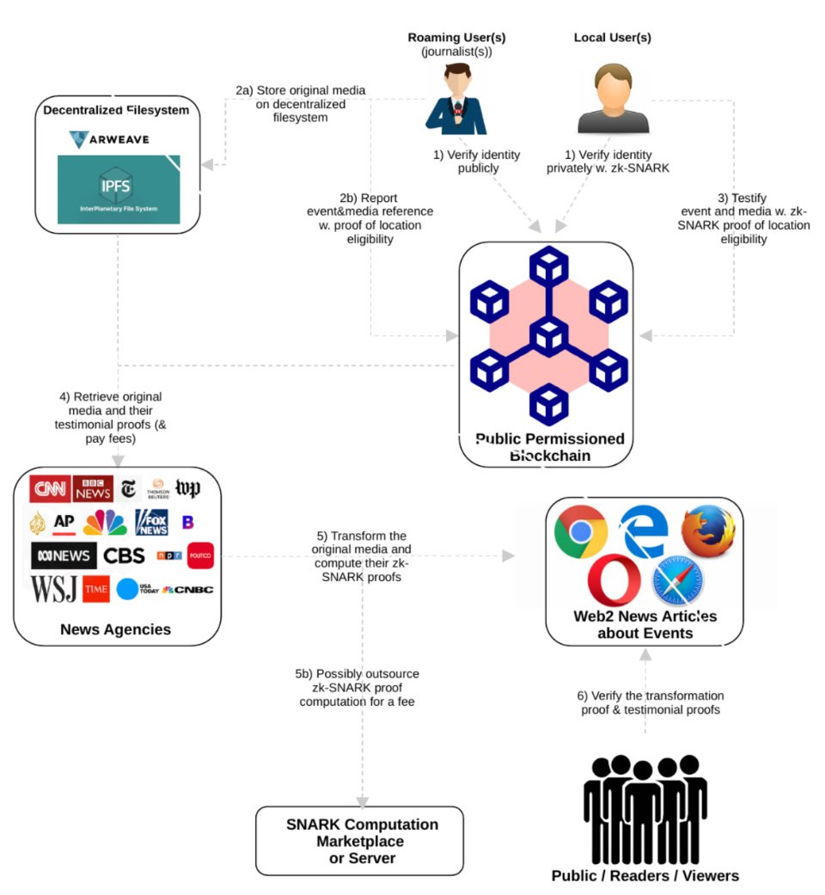

A decentralized application using zkSNARKs and blockchain technology to verify truth, empower users, and fight misinformation.
Reporters or journalists with verified identity can securely upload photos, videos, and event details with proof of location directly to our decentralized file system.
Users who live in the area of the event can verify their identity and location privately using zk-SNARKs and submit testimonials to blockchain confirming the news or denying it. Their votes strengthen the credibility of the news, ensuring truth is established or denied completely — not by algorithms or centralized authorities.
Once events are verified, news agencies can access and use trusted photos, videos, and testimonials (with applicable fees) directly from the decentralized file system. They can use these verified materials in their articles, ensuring transparency and accountability.
Readers and the public can view verified news articles and see transformation proofs if the original media was transformed — ensuring trust in every published event.

Reporters or journalists with verified identity can securely upload photos, videos, and event details with proof of location directly to our decentralized file system.
Users who live in the area of the event can verify their identity and location privately using zk-SNARKs and submit testimonials to blockchain confirming the news or denying it. Their votes strengthen the credibility of the news, ensuring truth is established or denied completely — not by algorithms or centralized authorities.
Once events are verified, news agencies can access and use trusted photos, videos, and testimonials (with applicable fees) directly from the decentralized file system. They can use these verified materials in their articles, ensuring transparency and accountability.
Readers and the public can view verified news articles and see transformation proofs if the original media was transformed — ensuring trust in every published event.